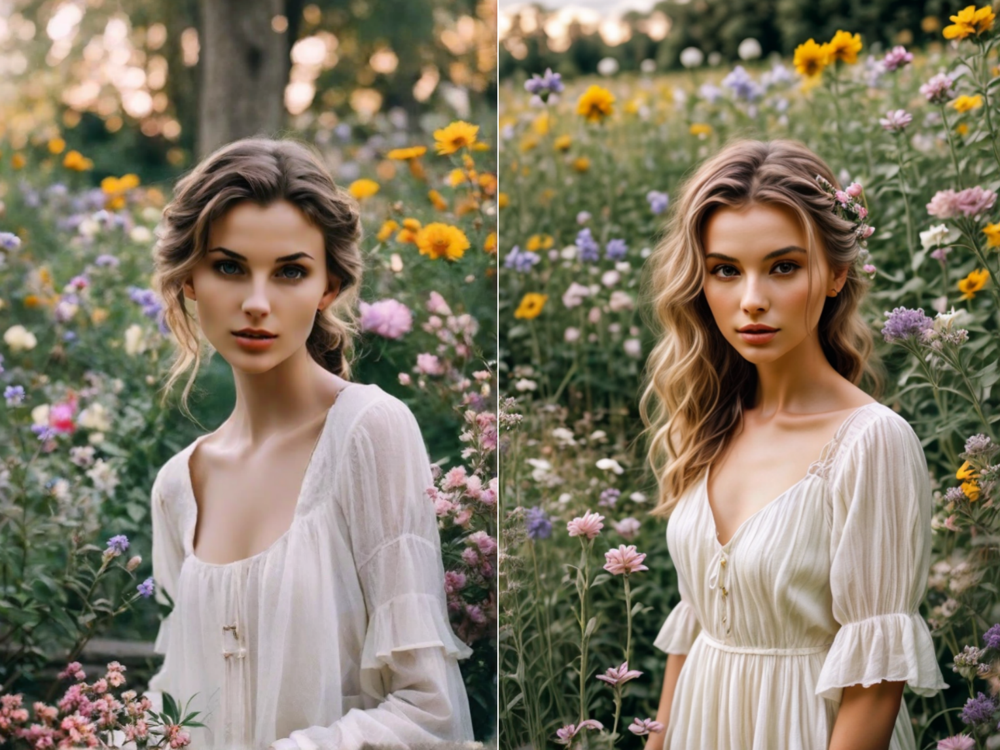
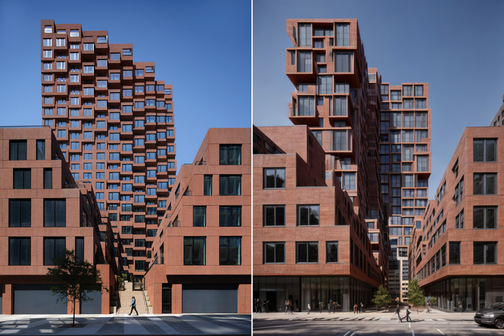
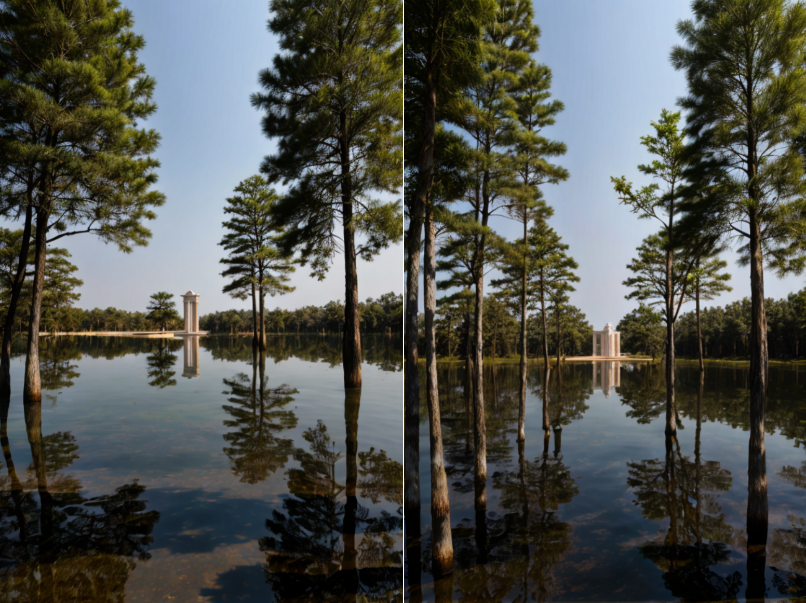

Reignite your design projects with the power of PromeAI's Image Variation tool. Effortlessly revamp any image while preserving distinctive style features, delivering fresh and unique visuals that resonate with your original concept. Ideal for finding inspiration or creating copyright-free assets, this AI image generator adapts to your creative needs.

Experience Boundless Creativity with One-Click Image Transformation
Embrace a seamless creative process as you explore endless possibilities. The image variation generator by PromeAI allows you to transform images with a single click, offering an exceptionally intuitive interface for maximum artistic freedom.

Tailor Your Image Variations to Perfectly Match Your Vision
With PromeAI's flexible controls, you're in command of the final output. Define how much your new image will differ from the original to suit specific project requirements, ensuring your vision comes to life just the way you imagined.
No Copyright Worries with Unique AI-Generated Visuals
Generate distinctive visuals without the stress of copyright limitations. PromeAI's AI image variation produces images that are entirely new, giving you the freedom to use them however you please without infringement concerns.
Fine-Tune Similarity Levels for Custom Image Results
PromeAI's advanced settings let you adjust the resemblance to the original image, providing tailored results. Whether you're looking for a subtle touch-up or a complete overhaul, the AI image generator grants complete control for personalized variations.
FAQ
What is PromeAI's Image Variation feature?
It's an AI-powered tool that transforms existing images into new visuals while maintaining stylistic elements of the original.
How does the image variation generator ensure my image remains unique?
The AI algorithm produces variations that are both original and free from copyright issues, perfect for fresh inspirations or project needs.
Can I control how much the generated image varies from the original?
Yes, PromeAI allows you to adjust the degrees of variation to get an image that matches your specific vision.
What kind of images can I use with the AI Image Variation Generator?
Our AI Image Variation Generator is compatible with a wide array of images, allowing you to explore new horizons on virtually any picture you'd like to reinvent.
Can I describe a specific outcome I want from the image variation?
Absolutely! You can input descriptions of your desired results, and our AI Image Variation will strive to create an image that aligns with your imagination.